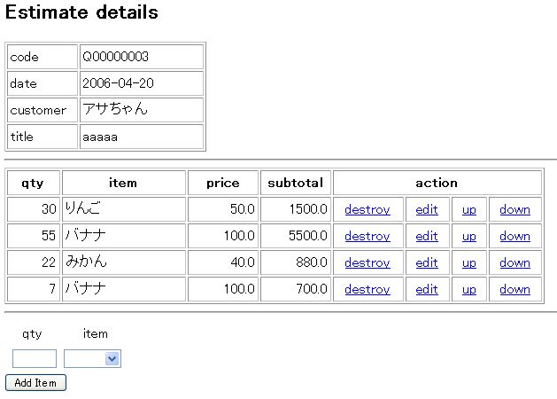
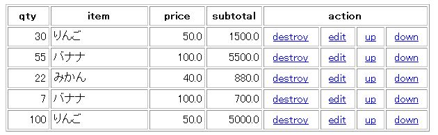
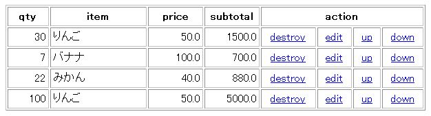

RubyOnRails を使ってみる 【第 7 回】 RJS を使ってみる
書いた人: 高木宏 (Gollum)
はじめに
今回の連載は、プロフェッショナルな執筆陣が多忙につき、Ruby on Rails しろうとの高木宏が最近夢中の RJS について書きます。 いつもの heavy なものとは違って内容がありませんが、ちょっと休憩ということで、ご勘弁いただき、RJS の紹介と適用例の下手なコードを楽しんでもらえればさいわいです。
Ajax とは
Rails を使っている人に、いまさら Ajax の解説は不要でしょう。 AJAX (Asynchronous JavaScript and XML) は、Web アプリケーションのありようを大きく変えつつあります。 古典的な Web アプリケーションが、ブラウザから送信される HTTP GET/POST Request にサーバーがページ単位にコンテンツを送信していたのに対して、Ajax Web アプリケーションでは、ブラウザから送信される XMLHttpRequest に対して、ページ中の部分的な更新内容を DOM (Document Object Model) 単位でサーバーが返すことで、応答性能や画面の柔軟性を劇的に改善できます。 Ruby on Rails が Ruby 勉強会＠関西で初めて紹介された時に、参加者は Rails/Ajax アプリケーションが提供する画面のダイナミックな点に驚嘆したものです。 古典的な Web アプリケーションでは、画面遷移しなければならない場面でも、同じ画面のままで、ちょっとした・しかし重要な画面変化を起こすことができます (AjaxOnRails)。
しかし、RJS 登場以前の Rails では、Ajax Web アプリを開発するには大きな問題がありました。 それは link_to_remote が :update する要素にひとつの DOM しか指定できないことです。 この結果、一回のアクション/トリガで複数の DOM 要素を更新する Ajax アプリを書くには、view テンプレートの中に手製の JavaScript と ERB を混在させることになります。 多言語環境で生きている人は平気でしょうが、Ruby でさえやっとこさっとこの筆者には、複数の言語が混在するスクリプトは頭が痛くなります。なにより JavaScript を覚えなければなりません。
RJS が登場して、Rails ユーザーは Ajax アプリを JavaScript を知らなくても非常に簡単に使えるようになりました。
RJS とはなにか
RJS は、Rails Ajax 応答用の JavaScript を生成するしくみです。 (少し前までは、Ajax レスポンス用のテンプレートです、と言い切れたのですが、最近は、Controller ベースの inline RJS と呼ばれるしくみができてますので、いちがいに RJS テンプレートとも言えないのがつらいところです。) RJS = Remote JavaScript とも Ruby JavaScript とも呼ばれますが、どちらが正しいかはよく知りません。JavaScriptGeneratorTemplates ともよばれるようです (これがいちばんしっくりきます)。
RJS では、ブラウザ上のページを page というオブジェクトとして扱い、page 中の DOM 要素への操作を Ruby コードだけで (ここが重要！) 柔軟に記述できます。
RJS のしくみ
RJS の動作のしくみは以下のとおりです。
- link_to_remote などで Controller の :action (method) が呼ばれます。:action を仮に xxx とします。
- RJS template ファイルである xxx.rjs の内容から JavaScript を生成し、ブラウザに送信します。
- ブラウザが JavaScript を実行し、既存のページの DOM 要素を操作します。
ここでいう DOM 要素とは、HTML タグに ユニークな id を付けたもののことを指します。
xxx.rjs ファイルは view テンプレートと同じ場所におきます。xxx.rhtml があればそちらが優先されます。
xxx.rjs のように RJS template に DOM 操作を記述する以外にも、Controller に inline RJS を記述する方法もあります。(MVC 的に美しくない！ という方もおられるかもしれません。)
RJS の記述の中心になるのはブラウザの現在のページを抽象化した page というオブジェクトで、RJS プログラミングは page オブジェクトに対する操作になります。 以下は、Rails 1.1 の David による紹介文に登場する RJS のサンプルです。
# First buy appears the cart, subsequent buys highlight it
page[:cart].visual_effect(@cart.size == 1 ? :appear : :highlight)RJS はピュア Ruby で記述します。view のように <% %> な ERB でもありません。Rails で提供される既存の Helper もインスタンス変数も有効です。
要素の指定方法
要素の指定方法は二通りあります。 以下のふたつは、どちらも、要素 ‘item_form’ をページから削除します。
page.remove 'item_form'
page[:item_form].removeRJS が生成する JavaScript
例えば、以下の RJS は、
page.select('p.hint').each do |hint|
hint.visual_effect :highlight
end次の JavaScript を生成します。
$$("p.hint").each(function(value, index) {
value.visualEffect("highlight");
});RJS 側が partial などを使ってイテレートしている場合は、巨大な JavaScript が生成されることもあります。
RJS が使える環境
RJS は Rails 1.1 から使えます。もしなんらかの理由で 1.1 にアップデートできない場合は、plugin も提供されています。 (plugin の場合は、以下で解説する機能のすべてが実装されているわけではありません。)
RJS を使うには、Ajax を使う時と同様に、HTML の head 要素内で、 JavaScript ライブラリの利用宣言が必要です。
<%= javascript_include_tag :defaults %>layout ファイルなどに加えてください。 上の例では :defaults と宣言し、public/javascripts 内のすべてのライブラリを include しています。
RJS が提供する機能
RJS が提供する機能は実に多様です。詳しくは RDoc マニュアルを参照してください。
- ActionView::Helpers::PrototypeHelper
- ActionView::Helpers::PrototypeHelper::JavaScriptGenerator::GeneratorMethods
以下では、機能別にそのいくつかを紹介します。
DOM 要素を置き換える (replace, replace_html, reload)
最もよく使われるカテゴリのひとつです。
- page.replace : 要素を完全に置き換えます (outer HTML の置き換え)。
- page.replace_html : 要素の内容を置き換えます (inner HTML の置き換え)。
- page.reload : 指定した要素の内容を同じ名前の partial でリフレッシュします。
page.replace :list, render(:partial => :list)
page.replace_html :list, render(:partial => :list)
page.reload :listDOM 要素の追加・削除 (insert_html, remove)
これもよく使われるグループです。
- page.insert_html : 要素に対して位置指定を使って追加します。
- page.remove : 要素を page から削除します。
page.insert_html :bottom, 'list', '<li>new item</li>'
page.remove :oldlistDOM 要素を表示する・見えなくする (show, hide)
指定の要素を表示する/見えなくする機能です。
視覚効果 (visual_effect)
Ajax で要素の追加・置き換え・削除を行うと、動作が速すぎてユーザーには何が起こったかわからないことがしばしばです。 要素に対する操作にあわせて視覚効果を付けて、ユーザーに対象の要素に対する注意を喚起することはとても重要です。
visual_effect には、さまざまなものが用意されています。詳しくは以下の RDoc を参照してください。
page.visual_effect :highlight, "item_form", :duration => 0.6上の例のように :duration で 視覚効果の動作時間を指定できます。速くすると動作自体が認識できませんから、最低 0.3 秒程度は必要なように思います。 わたしが好んでよく使う visual_effect は :highlight と :fade です。
タイミングを取る (delay)
直接 DOM 要素を操作するわけではありませんが、RJS で記述するふたつ以上の動作にちょっとした「間」をおける delay はよく使う便利な機能です。
page.delay(0.5) do
page.insert_html :top, 'item_form_block', :partial => 'item_form'
end上のスクリプトは 0.5 秒待ってから insert_html を実行します。
DOM 要素のプロパティの変更 (prototype/script.aculo.us element extensions)
DOM 要素のプロパティを変更できます。
例
page[:element].set_style :backgroundColor => '#f00'
page[:element].set_opacity => 0.5わたしはこの機能は使ったことがありません。
Controller からの RJS 操作 (render :update)
inline RJS とも呼ばれます。 RJS は .rjs ファイルだけでなく、Controller/Helper 中に記述することもできます。 つまり、.rjs ファイルなしの RJS も可能です。
render :update do |page|
page....
page....
endController に画面の操作を記述するのを嫌う人もあるかもしれませんが、.rjs だけで記述していると同じような操作を繰り返して記述することがよくあります。これを Helper や Controller に書いて再利用すれば、ちょっと DRY な気分になれます。
Drag & Drop (draggable, drop_receiving, sortable)
RJS から使うことは少ないかもしれませんが、動的に DOM 要素を変更する Ajax アプリで Drag & Drop な効果を維持し続けるには、これらのメソッドが必要です。
例
page.insert_html(:bottom, :list, "new list item..." )
page.sortable :listせっかく Drag & Drop sortable リストを作っても、要素を追加した後で、.sortable で再初期化しないと、追加した要素が Drag & Drop できません。
JavaScript の利用 (call, <<)
- page.call : JavaScript を呼び出します。
- page << “…. JavaScript…” : JavaScript を再利用します。
JavaScript が苦手なわたしはめったに使いません。イディオム的によく使うのは、フォームに入力された内容をリセットする以下の例です。
page.call 'Form.reset', 'item_form'RJS template 適用例
以下では、わたしが実際に業務で適用しようとしている RJS アプリケーションのサンプルを紹介します。
見積書明細行の編集
わたしの仕事は、セキュリティ機器の保守・運用・監視業務会社の経営です。 業務を Rails 化しようとすると、モデルとしては acts_as_list 型の題材が圧倒的に多くなります。 いちばん簡単なモデルとしては、見積書を想像してもらえればよいでしょう。
見積書のモデルと要件
見積書は大きくふたつの部分に分かれます。
- マスター部分
- 見積番号, 顧客名, 見積タイトル, 日付, 担当者など
- 明細部分
- 商品名, 個数, 単価, 小計など
これを ActiveRecord 風に記述すると、以下のようになります。
class Estimate < ActiveRecord::Base
has_many :e_items, :order => :position
belongs_to :customer
end
class EItem < ActiveRecord::Base
belongs_to :estimate
acts_as_list :scope => :estimate
belongs_to :product
endこの他にも class Product (製品マスタ), class Customer (顧客マスタ) がありますが割愛します。 Rails で見積情報の入力・修正アプリケーションを組むと、 マスター部分 (Estimate) は、scaffold した form をちょっと手直しすれば十分ですが、 明細行 (EItem) のほうはそうはいきません。 一画面で一明細行ずつ入力するのではなく、全体の明細行を見ながら、
- 新規の明細行を追加できる。
- 任意の明細行を修正できる。
- 任意の明細行を削除できる。
- 明細行の順を任意に変更できる。
という作業が可能なことがアプリケーションの要件になります。
見積書明細行の画面
以上の要件を満足する見積書明細行の入力・編集画面のサンプルを作ってみました。 画面は以下のような構成です。 
画面上部の表ののマスター部分 (Estimate) は今回の例では使いません。 二番目の表が RJS 操作の中心です。以下が二番目の表を作成している .rhtml です。
<%= javascript_tag <<-END
function disable_submit_button() {
$('submit_button').disabled = true;
}
function enable_submit_button() {
$('submit_button').disabled = false;
}
END
%>
<table border="1" cellpadding="3">
<colgroup width="60"></colgroup>
<colgroup width="140"></colgroup>
<colgroup width="80"></colgroup>
<colgroup width="80"></colgroup>
<colgroup width="80"></colgroup>
<colgroup width="50"></colgroup>
<colgroup width="40"></colgroup>
<colgroup width="60"></colgroup>
<thead>
<tr>
<th>qty</th>
<th>item</th>
<th>price</th>
<th>subtotal</th>
<th colspan="4">action</th>
</tr>
</thead>
<tbody id="item-list">
<%= render(:partial => 'e_item', :collection => @estimate.e_items) %>
</tbody>
</table>
<hr/>
<div id="item_form_block">
<%= render :partial => 'item_form' %>
</div>先頭で作成している disable_submit_button(), enable_submit_button() という JavaScript は データの追加削除用のボタンを disable/enable するためのものです。
明細行の部分には <tbody id=”item-list”> という id をつけています。
画面下部のフォームを配置する部分には、<div id=”item_form_block”> という id をつけ、 item_form という partial でフォームを配置しています。
e_item という partial で作成している明細行の部分では以下のように各行に id をつけ、 行末に link_to_remote アクションを 4 つ定義しています。
<tr id="item_<%= e_item.id %>" >
<td align="right"><%= e_item.qty %></td>
<td><%= e_item.product.name %></td>
<td align="right"><%= e_item.product.price %></td>
<td align="right"><%= e_item.qty * e_item.product.price %></td>
<td align="center">
<%= link_to_remote('destroy',
:url => { :action => 'rm_item', :id => e_item },
:confirm => 'Are you sure?') %>
</td>
<td align="center">
<%= link_to_remote('edit',
:url => { :action => 'edit_item', :id => e_item } ) %>
</td>
<td align="center">
<%= link_to_remote('up',
:url => { :action => 'up_item', :id => e_item } ) %>
</td>
<td align="center">
<%= link_to_remote('down',
:url => { :action => 'down_item', :id => e_item } ) %>
</td>
</tr>以後、説明はこの “item-list” と “item_<%= e_item.id %>” のふたつの要素に対する操作が中心になります。
明細行の追加
追加は画面下部のフォーム (‘item_form’) から行います。 _item_form.rhtml の内容は以下のとおりです。
<%=
case @form_action
when "add_item"
form_remote_tag :url => { :action => @form_action, :id => @estimate.id },
:loading => 'disable_submit_button()',
:html => { :id => 'item_form' }
when "update_item"
form_remote_tag :url => { :action => @form_action, :id => @e_item.id },
:loading => 'disable_submit_button()',
:html => { :id => 'item_form' }
else
# do nothing
end
%>
<table border="0" cellpadding="3">
<colgroup width="60"></colgroup>
<colgroup width="80"></colgroup>
<tr align="center">
<td>qty</td>
<td>item</td>
</tr>
<tr>
<td align="right">
<%= text_field(:e_item, :qty, :size => 7 ) %>
</td>
<td>
<%=
@products = Product.find(:all)
collection_select(:e_item, :product_id, @products,
:id, :name,
{ :include_blank => true }
)
%>
</td>
</tr>
</table>
<%= submit_tag(@form_button, :id => 'submit_button') %>
<%= end_form_tag %>_item_form.rhtml は、明細行を追加する場合・修正する場合の両方で使えるようにするために、 Controller 側で @form_action, @form_button を用途に応じて設定して render します。 初期状態では、@from_action は ‘add_item’ に設定されており、明細行追加用のフォームになっています。
ボタンを二度クリックされて二重登録されることを防ぐために、 disable_submit_button で、ボタンを disable しています。 add_item というアクションが Ajax コールされ、 Controller 中でデータベースに @estimate.e_items のエントリがひとつ追加されます。
def add_item
@estimate = Estimate.find(params[:id])
@estimate.e_items.create(params[:e_item])
@estimate.save
@e_item = @estimate.e_items.last
endデータを追加した後に実行される add_item.rjs は以下のとおりです。
page.call 'Form.reset', 'item_form'
page.insert_html :bottom, 'item-list', :partial => 'e_item'
page.visual_effect :grow, "item_#{@e_item.id}", :duration => 0.6
page.delay(1) do
page.call 'enable_submit_button'
endまず、フォームに入力された内容をリセットし、”item-list” 要素の下部に明細行を追加します。 残念ながら、動きは見てもらえませんが、 add_item がコールされた時点で disable しているボタンを enable にしています (form_remote_tag の :loading)。
フォームに “100個のりんご” を入力し追加された結果、画面は以下のようになります。 
明細行の削除
各行の右の destroy リンクをクリックすると alert ボックスが出て確認ののち、その行を削除します。
上から二行目の “ 55 バナナ … “ の destroy をクリックして OK すると、
アクション rm_item がコールされ、対象行は表から消えて以下のようになります。

rm_item.rjs は以下のとおりです。
page.visual_effect :highlight, "item_#{@e_item.id}", :duration => 0.4
page.visual_effect :fade, "item_#{@e_item.id}", :duration => 0.4消える時に :highlight しても仕方ないかもしれませんが、 何が消えたかを意識してもらうためにこういう視覚効果は重要です。
明細行の修正
Excel のように、修正したい行の要素をクリックしていきなり修正！ といきたかったのですが、 tbody 要素内での動的な変更はいろいろと制約があってやめました。 edit リンクをクリックすると修正対象行の内容を下部のフォームにコピーし、 フォームを修正用に変更し、 フォームのボタンをクリックした時点で update_item アクションをコールしています。 edit_item アクションは以下のとおりです。
def edit_item
@form_action = 'update_item'
@form_button = 'Update Item'
@e_item = EItem.find(params[:id])
endController の edit_item アクションの中で、 @form_action を ‘update_item’ と設定しておき、 edit_item.rjs 中では、画面下部 item_form_block 中のフォームを、 明細行追加用の状態から明細行修正用のものに置き換えます。 edit_item.rjs は以下のとおりです。
page.visual_effect :highlight, "item_#{@e_item.id}", :duration => 0.4
page[:item_form].remove
page.delay(0.5) do
page.insert_html :top, 'item_form_block', :partial => 'item_form'
page.visual_effect :highlight, "item_form", :duration => 0.6
endupdate_item 後の RJS は update_item.rjs にではなく、 Controller の update_item アクション中に記述してみました。
def update_item
@e_item = EItem.find(params[:id])
@estimate = Estimate.find(@e_item.estimate_id)
@e_item.update_attributes(params[:e_item])
@estimate.reload
render :update do |page|
#page.replace "item_#{@e_item.id}", :partial => 'e_item'
page.replace_html "item-list", :partial => 'e_item',
:collection => @estimate.e_items
page.visual_effect :highlight, "item_#{@e_item.id}", :duration => 0.4
page[:item_form].remove
@form_action = 'add_item'
@form_button = 'Add Item'
page.insert_html :top, 'item_form_block', :partial => 'item_form'
end
endコメントアウトしてある
page.replace "item_#{@e_item.id}", :partial => 'e_item'は、Firefox なら有効です。 が悲しいことに IE 6 でこれを使うとエラーになりますので、 しかたなく、partial に collection を渡して明細行の表全体を再描画しています。
明細行の修正が終わった後に、item_form_block のフォームをいったん削除し、 @form_action を ‘add_item’ に設定し、 再度、partial item_form を明細行追加用に戻しています。
明細行を上下に移動する
acts_as_list には便利なメソッドがいろいろと用意されており、 その中で position 操作はとても重宝します。 この表中の明細行を up/down させるリンクは、move_higher, move_lower を利用しています。 この up, down のリンクをクリックすると up_item, down_item のアクションがコールされます。
このふたつのアクションも .rjs ファイルを使わず、RJS の記述を Controller 中だけで済ませています。
def up_item
@e_item = EItem.find(params[:id])
@estimate = Estimate.find(@e_item.estimate_id)
@e_item.move_higher
@e_item.save
@estimate.reload
redraw_item_list
end
def down_item
@e_item = EItem.find(params[:id])
@estimate = Estimate.find(@e_item.estimate_id)
@e_item.move_higher
@e_item.save
@estimate.reload
redraw_item_list
end
def redraw_item_list
render :update do |page|
page.replace_html "item-list", :partial => 'e_item',
:collection => @estimate.e_items
page.visual_effect :highlight, "item_#{@e_item.id}", :duration => 0.4
end
endredraw_item_list というメソッドをコントローラ中に直接書いていますが、 本来、これは Helper メソッドの中に置くべきでしょう。
fig.3 の状態から、三行目の up のリンクをクリックすると以下のようになります。 
Ajax ばりばりで！ という趣向なら、 この明細行の上下も Drag & Drop sortable リストでやってみたかったのですが、 tbody 内での制約から断念しました。
よいことばかりではない
この例のように、RJS を使うと、 Web アプリでもデスクトップアプリに近い感覚のものが 簡単に開発できることがわかっていただけたかと思います。 が、いいことばかりではありません。
- デバッグがやっかい。
- validation が raise した時の処理を記述するのが困難。
- flash[] が使いにくい。
- 画面内容とデータベースが同期している保証がない。
最後の問題は、Ajax/RJS アプリに限ったことではありませんが、 多数の明細行を扱っていて長時間画面遷移をしない状態が続くと危険が増すのは間違いありません。 中小企業でユーザーは 2,3 人でも、 繁忙期におこる同一見積への競合入力は十分可能性があります。 運用でカバーするだけでなく、システム側でもしっかりとした対策が必要でしょう。
RJS のデバッグ
Rails という開発環境になれていると、 あのげっぷが出るほど詳しく親切なスタックトレースのおかげで、 ほかの環境でのデバッグにいやけがさすことがしばしばあります。 RJS でエラーを起した場合、エラーはブラウザ側で発生するので、 とたんに JavaScript のデバッグになり、 JavaScript が苦手なわたしにはかなり苦労させられています。 以下ではいくつかデバッグのヒントを挙げてみます。
Firefox を使え！
Tom Funchs の Ajax デバッグルールその一です。 Firefox はたしかに IE よりも多くの情報をデバッグに提供してくれます。
Firefox とその Extension を使え！
Tom Funchs の Ajax デバッグルールその二です。 具体的には FireBug などの強力な JavaScript デバッグツールを指しています (FireBug 0.3.2)。
対象のブラウザはすべてテストせよ！
Tom Funchs の Ajax デバッグルールその三です。 これは現在ではかなり困難かもしれません。 RJS と親しんでくると IE 6 には悩まされるでしょう。 特に <table> にこだわっていると IE で RJS を使うのがいやになるかもしれません。 Firefox で開発しておいて IE 6 でテストする、という流れがわたしの開発パターンです。
.rjs 中であやしいところを順にコメントアウトしていく
単純ですがけっこう有効です。
その他
Chad Fowler の “Rails Recipes” Recipe 11 “Debugging Ajax” に、 自分で Ajax レスポンダを仕込んでおき、 デバッグしたい時に <div id=”debug”> を追加すれば、デバッグ情報が画面に出力される、 という手法が紹介されています。
参考ドキュメント
RDoc
- ActionView::Helpers::PrototypeHelper
- ActionView::Helpers::PrototypeHelper::JavaScriptGenerator::GeneratorMethods
- ActionView::Helpers::ScriptaculousHelper
リンク
- “Advanced Rails Ajax Techniques” Thomas Fuchs
- “Rails RJS Templates need better replace semantics” Tom Fakes
書籍
著者について
1957年生まれのオヤジ。 オブジェクト指向, HTML, CGI, JavaScript よくわかりませんっ！ 永遠の初心者プログラマ。根っからの無精者。 中小企業 (ネットワークセキュリティ機器の保守・運用・監視会社) の平取 (ひらとり) です。 Ruby には、インターンで使った某女子大生から感染しました。 Ruby の利用用途は、機器のログ解析やサーバーのシステム管理以外に、 社内業務アプリや自社開発の WebUI にこっそり仕込んでいたりします。